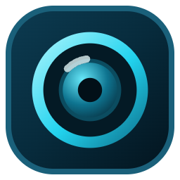
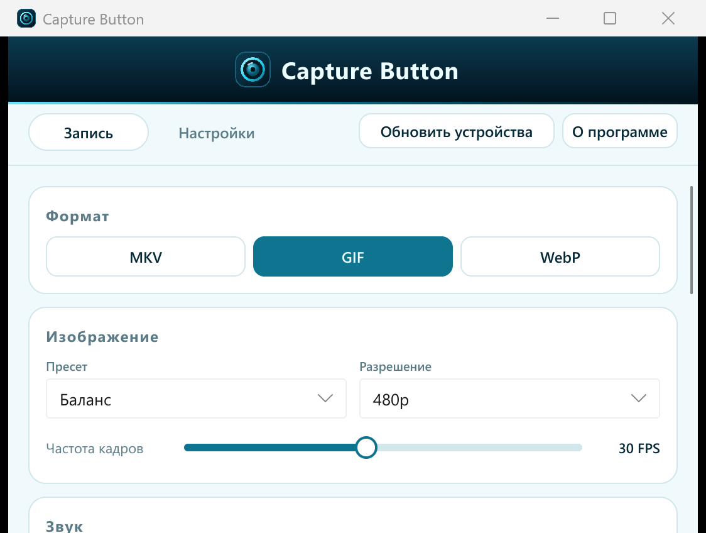
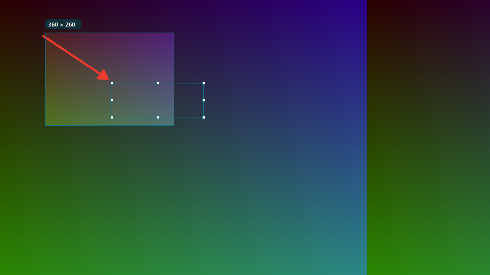
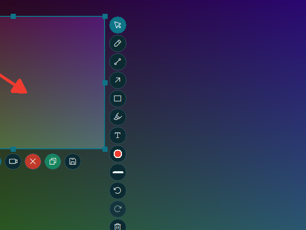
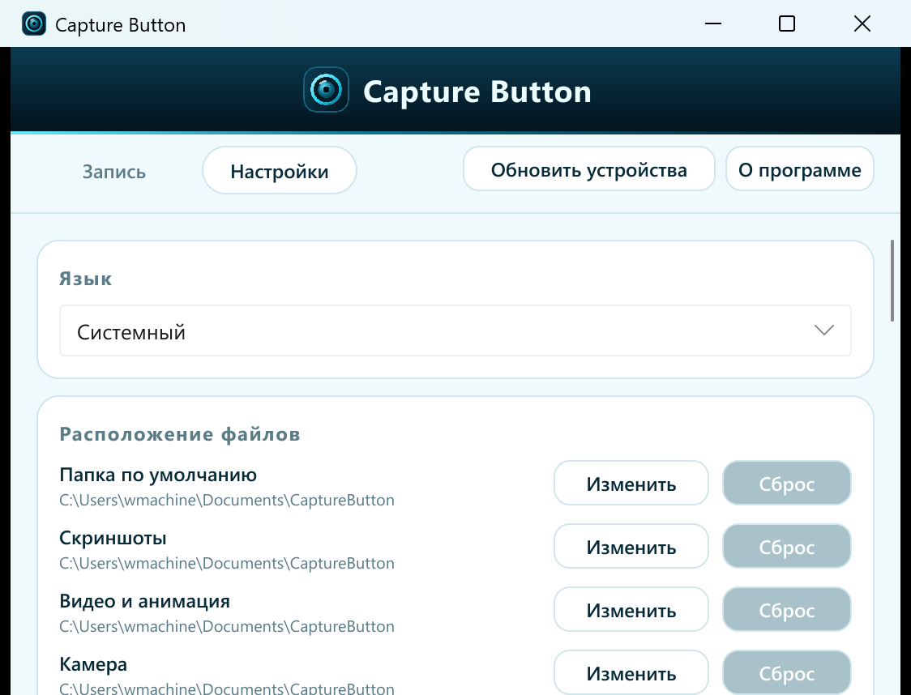

01
截图
把屏幕、窗口或选定区域截成 PNG。选框可以用方向键移动，还能直接在画面上写字、圈画和遮挡。
- 全屏、窗口或区域
- 箭头、文字、画笔和形状
- 像素级微调选框
- PNG、剪贴板或文件夹

Capture Button免费 · 开源 · Windows · Linux
Capture Button 可把屏幕、窗口或区域录成 MKV，截取 PNG 截图，并生成短 GIF 和 WebP。系统声音、麦克风和区域标注，全在一个按钮上。

三步搞定
没有占满半屏的时间线，也没有上百个设置。选中区域，截个图或录段视频，文件就到手了。
把屏幕、窗口或选定区域截成 PNG。选框可以用方向键移动，还能直接在画面上写字、圈画和遮挡。

把屏幕、窗口或区域录成 MKV——最高 2160p、60 帧每秒。预设、分辨率和帧率都在一个界面里设置。

适合聊天、文章或问题反馈的短动画。预设和帧率设置，让文件不会变大。
让人心动的细节
别人藏在三层菜单后面的东西，在这里第一次点击就能用。

箭头、直线、矩形、高亮、文字和颜色——不用开口就能把截图说明白。

在屏幕上框出区域，再精确到像素——尺寸直接显示在框上，工具栏始终在手边。

版本、FFmpeg、x264 和 Phosphor Icons 的许可文本，以及源码链接，都在同一个「关于」窗口里。

开机启动、在托盘中运行、把文件复制到剪贴板、捕获时隐藏窗口。所有开关都会被记住。
从选框到文件
FFmpeg 已经内置，什么都不用另外安装：Capture Button 会自己生成 MKV、GIF 或 WebP。
在屏幕上拉出选框：拖动边角，或用方向键调到需要的尺寸。
PNG 截图、MKV 视频，或 GIF、WebP 短动画——一键完成。
文件已经在文件夹里，也已经在剪贴板里：打开、复制，或在资源管理器中显示。
REC → MKV · 0%
为什么选 Capture Button
没有订阅、水印和录制限制。源码以 MIT 开放——欢迎自己查看。
单个可执行文件，内置 FFmpeg。不用再装什么，也不用配置。
文件写在你自己的磁盘上。没有云端、没有账号，录制内容不会发到任何地方。
English、русский 和 中文。语言可在设置里切换，也会跟随系统并记住选择。
点击图标就开始捕获。最近的文件就在手边：打开、复制或在文件夹中显示。
源码采用 MIT，成品因 FFmpeg 和 x264 而按 GPL 分发，Phosphor 图标为 MIT。所有文本都随程序一起提供。